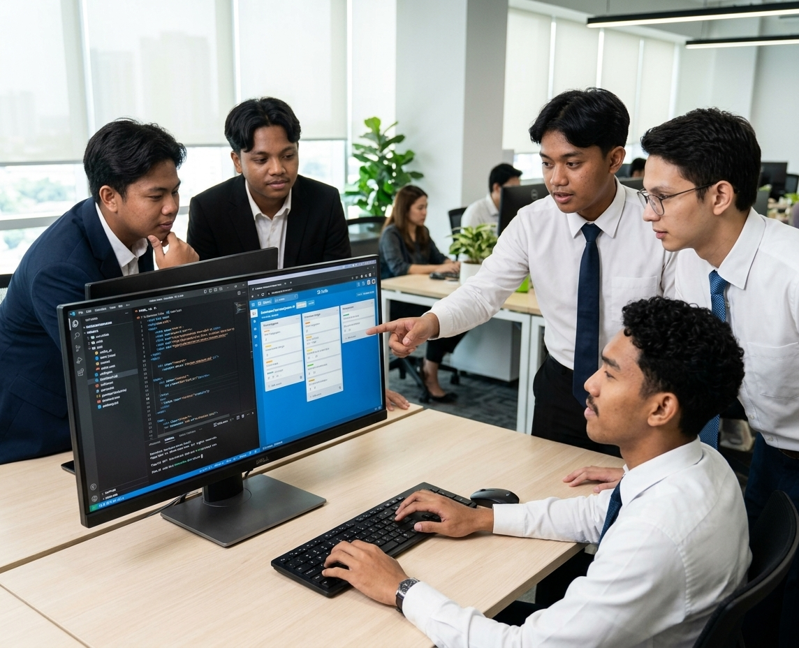
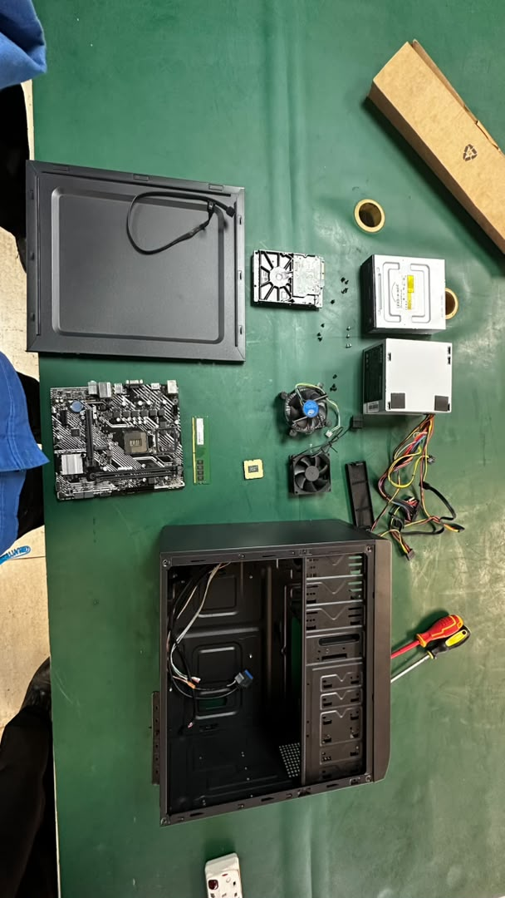
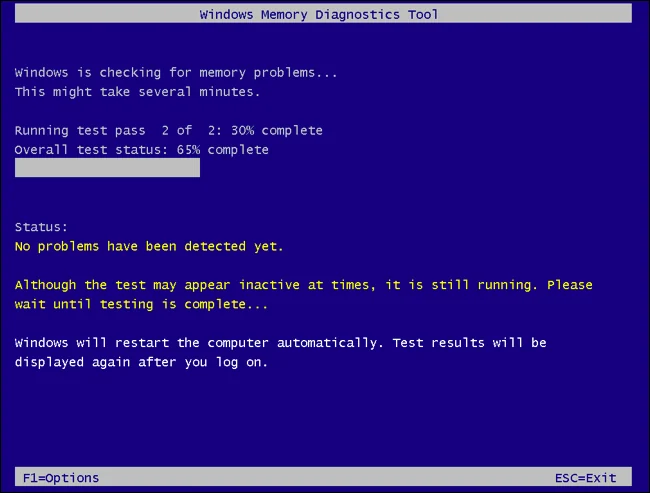

FEATURED PROJECT
CSS & Sistem Diagnostik Web

Projek pembangunan antaramuka (UI) laman web kelab menggunakan HTML5 dan CSS3 moden untuk memaparkan log pembaikan perkakasan secara sistematik.
VIDEO GUIDE
Tutorial: Asas Flexbox & Grid
Tonton panduan ringkas bagaimana ahli kelab menyusun susun atur responsif dan melakukan analisis masalah sistem.
Projek Terkini: DIY PC Diagnostics

Menggunakan perisian diagnostik sumber terbuka dan peralatan ujian untuk mengenal pasti punca kegagalan komponen komputer.
Logbook Bengkel & Pembaikan

Bench 4: BIOS & Thermal Fix
Pembersihan habuk & gantian thermal paste
Skrip Ujian Kestabilan RAM
Analisis ralat memori & kelajuan jamSertai Bengkel Kami
Ingin belajar cara membaiki PC, menganalisis masalah sistem, atau membina laman web? Sertai sesi mingguan kami di makmal JMTI.